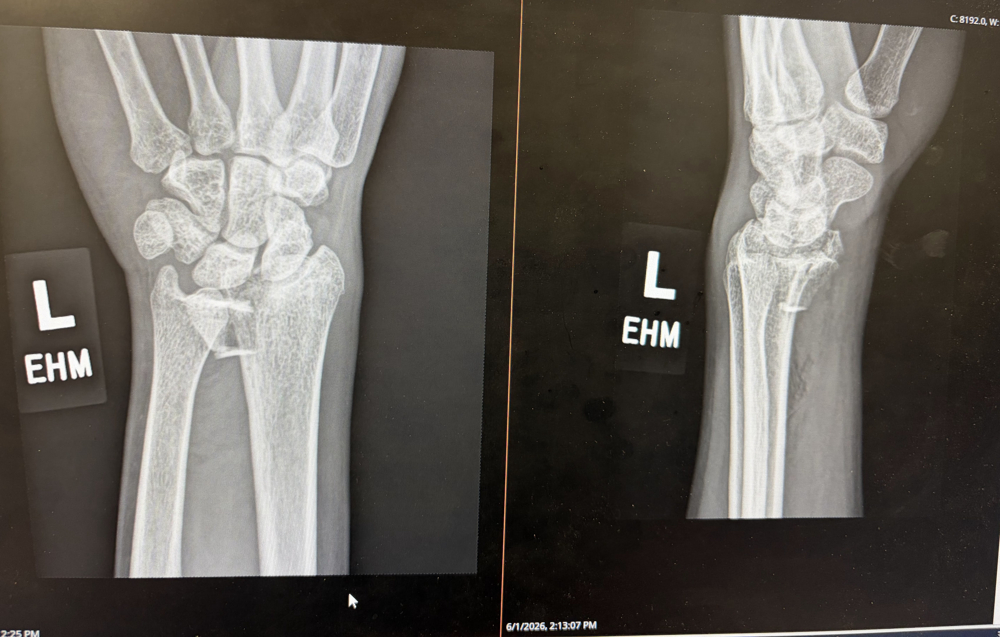

I was looking forward to a hearty lunch after having biked some 35 miles with a friend on the first of June on a sunny Santa Clarita noon. En route to Kotsu Ramen and Gyoza on Lyons Avenue, and being on the easiest part of our trip (the flat, open, and car-less South Fork Trail), I made some unnecessary and adventurous decisions, which may have been encouraged by the throttle on my e-bike. I was going around 17 miles per hour. Before I knew it, I found myself on the ground with my eyes half-closed, glanced at my beautiful bike having valiantly accompanied me on my descent to the warm (or was it hot?) concrete, heard my friend immediately rushing to my assistance. Despite being in the fetal position in that moment, I somehow remembered a conversation I had had with another friend about wearing helmets. Luckily, I was wearing mine on this trip. I was helped up, sat in the shade under a lone tree, and felt a little vulnerable as I agreed to be taken to the hospital without any hesitation or internal resistance.
Just a week or so ago, I had finished reading the late Christopher Hitchens’ Mortality, a posthumously published collection of essays which poignantly describe his experience with stage 4 esophageal cancer. The feelings I felt reading his writing had returned to me as I pictured myself at Henry Mayo Newhall Hospital, still at the lonely South Fork Trail, feeling sweaty and stinky (and hungry). Though I was in some pain and certain discomfort, my denial/determination proved to be stronger, and I told my friend I wanted to bike to the hospital since we were only 10 minutes away.
It was my left wrist. On our way through the suburbs, my left arm probably flailed in the air as I operated my e-bike with my right hand, wondering if my preferred mode of transport to the hospital, though probably being the cheapest, least complicated, and most immediate option, would somehow prove to be the catalyst for another preventable accident. But after crossing an audience of locomotives at a traffic light and biking to urgent care, we arrived with no additional injuries.
Replaying the accident in my mind was easy enough. I think I can claim to have performed far more audacious stunts on my bike—one such event was me going downhill on a deserted sidewalk (it is legal to do so here), completely hands-free, at 17 miles per hour, late at night, while recording a first-person view of the minor stunt with my phone, which played a Bach Brandenburg Concerto at a reasonable volume. So, my defensive ego tells me I may not have lacked skill. But I realized that these leaps of faith, accumulated gradually over some 10 months and some 2500+ miles of use, may have fueled my overconfidence and my unfounded belief in being a non-conformist in matters of gravity and balance.
In between waiting for the receptionist at Urgent Care to finish his phone call, for my roommate to fish out my wallet from my backpack at home to send me a picture of my health insurance card and photo ID, feeling grateful for my friend who remained by my side, waiting for nurses and providers to attend to me in some waiting room, being sent for an x-ray in a different building later, before making my way back to urgent care to meet the provider, and finding that standing, while holding my limp wrist with my right arm in as stationary of a position as possible, was easier than sitting, I felt as though the pain had a slightly cathartic quality to it. I couldn’t find myself worrying about anything just yet. That changed pretty quick.
I have always been a little shy to admit what instrument I play, and usually preface my musical background by mentioning how I studied composition and electronic music during my undergraduate studies. But once I heard them using the word “fracture”, I somehow summoned a lot of unprecedented and sudden self-assertion and told them that I was a pianist. I was met with some empathetic nodding but all I remember now are the words “metal plate”, “screw”, and “recovery”.
At nearly 5PM, close to closing time, I was able to meet a surgeon who confirmed the severity of the injury, suggested surgery for the best recovery outcome, and said that she wanted me to start using my hands as soon as possible. “Early motion”. I left the hospital feeling a little disheartened. I had a lot of momentum at the piano; I had finally tuned my kanjira (a south Indian tambourine) to my liking; I had begun swimming 4 sets of 250 yards for the first time in my life, and was even hoping to actively rest by playing videogames this summer. I quickly accepted that this was basically lost, but felt suave enough to remind myself that I had plenty of ways to keep myself busy and engaged.
My friend elected to be my chauffeur and we drove to a pharmacy to get a water-proof cover for my arm, which now sat awkwardly in a splint and sling. There we saw the manager, a young and chill guy around my age, who we had seen a few months prior when I was trying to get some passport sized pictures for my renewal application. We had made multiple trips that frustrating day, and he must have seen that, and was kind to me. I asked him where we could find a cover for my cast so that I could protect it without it getting wet, before thanking him once again for the troubles I had had with that passport-sized picture. He remembered that day too. This guy has witnessed all of my worst moments in Santa Clarita.
Some kind friends were able to meet me later that night at my home, and one of their parents was a doctor, who seconded the surgeon’s opinion, the “early motion” strategy. I expelled any residual skepticism and indecisiveness, and committed to ask my friend to drive me back to the hospital at 8 AM next day. And so I spent another long day at Henry Mayo, laid on the pre-op bed for some 3 hours in a gown that left my buttocks exposed (I remembered how the son in Modern Family chose to wore it the wrong way one episode, preferring to have his genitals exposed, because he didn't want anyone to see his derrière), thought about how the pre-op nurses must see cases like mine and much worse every day, felt grateful for my friend still beside me, and found myself feeling determined to transcend all of this with some decent self-talk.
5 days have passed since my surgery, and I have made efforts to restore my habits. These include walking to get some groceries, or to campus to play some right-handed piano, and showing up at social gatherings. Most of all I feel touched by all the care I have received from friends and family, and I feel pretty spoilt, as I wait for an Uber Eats order my aunt in London generously placed for me. In my teens, I used to think people with fractures looked really cool, as if they projected an aura of resilience, or as if they remained “undefeated”. I was always curious about getting one myself, and I guess I got my wish.